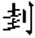

公汗
西洋的慈善家是怕看虐待动物的，倒提着鸡鸭走过租界就要办。[178]所谓办，虽然也不过是罚钱，只要舍得出钱，也还可以倒提一下，然而究竟是办了。于是有几位华人便大鸣不平，以为西洋人优待动物，虐待华人，至于比不上鸡鸭。
这其实是误解了西洋人。他们鄙夷我们，是的确的，但并未放在动物之下。自然，鸡鸭这东西，无论如何，总不过送进厨房，做成大菜而已，即顺提也何补于归根结蒂的运命。然而它不能言语，不会抵抗，又何必加以无益的虐待呢？西洋人是什么都讲有益的。我们的古人，人民的“倒悬”[179]之苦是想到的了，而且也实在形容得切帖，不过还没有察出鸡鸭的倒提之灾来，然而对于什么“生刲驴肉”“活烤鹅掌”[180]这些无聊的残虐，却早经在文章里加以攻击了。这种心思，是东西之所同具的。
但对于人的心思，却似乎有些不同。人能组织，能反抗，能为奴，也能为主，不肯努力，固然可以永沦为舆台[181]，自由解放，便能够获得彼此的平等，那运命是并不一定终于送进厨房，做成大菜的。愈下劣者，愈得主人的爱怜，所以西崽[182]打叭儿，则西崽被斥，平人忤西崽，则平人获咎，租界上并无禁止苛待华人的规律，正因为我们该自有力量，自有本领，和鸡鸭绝不相同的缘故。
然而我们从古典里，听熟了仁人义士，来解倒悬的胡说了，直到现在，还不免总在想从天上或什么高处远处掉下一点恩典来，其甚者竟以为“莫作乱离人，宁为太平犬”[183]，不妨变狗，而合群改革是不肯的。自叹不如租界的鸡鸭者，也正有这气味。
这类的人物一多，倒是大家要被倒悬的，而且虽在送往厨房的时候，也无人暂时解救。这就因为我们究竟是人，然而是没出息的人的缘故。
六月三日。
【附录】：论“花边文学”
林默
近来有一种文章，四周围着花边，从一些副刊上出现。这文章，每天一段，雍容闲适，缜密整齐，看外形似乎是“杂感”，但又像“格言”，内容却不痛不痒，毫无着落。似乎是小品或语录一类的东西。今天一则“偶感”，明天一段“据说”，从作者看来，自然是好文章，因为翻来复去，都成了道理，颇尽了八股的能事的。但从读者看，虽然不痛不痒，却往往渗有毒汁，散布了妖言。譬如甘地被刺，就起来作一篇“偶感”，颂扬一番“摩哈达麻”，咒骂几通暴徒作乱，为圣雄出气禳灾，顺便也向读者宣讲一些“看定一切”，“勇武和平”的不抵抗说教之类。这种文章无以名之，且名之曰“花边体”或“花边文学”罢。
这花边体的来源，大抵是走入鸟道以后的小品文变种。据这种小品文的拥护者说是会要流传下去的（见《人间世》：《关于小品文》）。我们且来看看他们的流传之道罢。六月念八日《申报》《自由谈》载有这样一篇文章，题目叫《倒提》。大意说西洋人禁止倒提鸡鸭，华人颇有鸣不平的，因为西洋人虐待华人，至于比不上鸡鸭。
于是这位花边文学家发议论了，他说：“这其实是误解了西洋人。他们鄙夷我们是的确的，但并未放在动物之下。”
为什么“并未”呢？据说是“人能组织，能反抗，……自有力量，自有本领，和鸡鸭绝不相同的缘故。”所以租界上没有禁止苛待华人的规律。不禁止虐待华人，当然就是把华人看在鸡鸭之上了。
倘要不平么，为什么不反抗呢？
而这些不平之士，据花边文学家从古典里得来的证明，断为“不妨变狗”之辈，没有出息的。
这意思极明白，第一是西洋人并未把华人放在鸡鸭之下，自叹不如鸡鸭的人，是误解了西洋人。第二是受了西洋人这种优待，不应该再鸣不平。第三是他虽也正面的承认人是能反抗的，叫人反抗，但他实在是说明西洋人为尊重华人起见，这虐待倒不可少，而且大可进一步。第四，倘有人要不平，他能从“古典”来证明这是华人没有出息。
上海的洋行，有一种帮洋人经营生意的华人，通称叫“买办”，他们和同胞做起生意来，除开夸说洋货如何比国货好，外国人如何讲礼节信用，中国人是猪猡，该被淘汰以外，还有一个特点，是口称洋人曰：“我们的东家”。我想这一篇《倒提》的杰作，看他的口气，大抵不出于这般人为他们的东家而作的手笔。因为第一，这般人是常以了解西洋人自夸的，西洋人待他很客气；第二，他们往往赞成西洋人（也就是他们的东家）统治中国，虐待华人，因为中国人是猪猡；第三，他们最反对中国人怀恨西洋人。抱不平，从他们看来，更是危险思想。
从这般人或希望升为这般人的笔下产出来的就成了这篇“花边文学”的杰作。但所可惜是不论这种文人，或这种文字，代西洋人如何辩护说教，中国人的不平，是不可免的。因为西洋人虽然不曾把中国放在鸡鸭之下，但事实上也似乎并未放在鸡鸭之上。香港的差役把中国犯人倒提着从二楼摔下来，已是久远的事；近之如上海，去年的高丫头，今年的蔡洋其辈，他们的遭遇，并不胜过于鸡鸭，而死伤之惨烈有过而无不及。这些事实我辈华人是看得清清楚楚，不会转背就忘却的，花边文学家的嘴和笔怎能朦混过去呢？
抱不平的华人果真如花边文学家的“古典”证明，一律没有出息的么？倒也不的。我们的古典里，不是有九年前的五卅运动，两年前的一二八战争，至今还在艰苦支持的东北义勇军么？谁能说这些不是由于华人的不平之气聚集而成的勇敢的战斗和反抗呢？
“花边体”文章赖以流传的长处都在这里。如今虽然在流传着，为某些人们所拥护。但相去不远，就将有人来唾弃他的。现在是建设“大众语”文学的时候，我想“花边文学”，不论这种形式或内容，在大众的眼中，将有流传不下去的一天罢。
这篇文章投了好几个地方，都被拒绝。莫非这文章又犯了要报私仇的嫌疑么？但这“授意”却没有的。就事论事，我觉得实有一吐的必要。文中过火之处，或者有之，但说我完全错了，却不能承认。倘得罪的是我的先辈或友人，那就请谅解这一点。
笔者附识。
七月三日《大晚报》《火炬》。
注 释
[177] 本篇最初发表于1934年6月28日《申报·自由谈》。
[178] 当时上海公共租界工部局有不许倒提鸡鸭在路上走，违者即拘入捕房罚款的规定。这里所说西洋的慈善家，指当时上海外侨中“西人救牲会”的组织。
[179] “倒悬” 语出《孟子·公孙丑（上）》：“当今之时，万乘之国行仁政，民之悦之，犹解倒悬也。”
[180] “生

驴肉” 据清代钱泳《履园丛话》卷十七：“山西省城外，有晋祠地方……有酒馆……曰驴香馆。其法以草驴一头，养得极肥，先醉以酒，满身排打。欲割其肉，先钉四桩，将足捆住；而以木一根横于背，系其头尾，使不得动。初以百滚汤沃其身，将毛刮尽，再以快刀零割。要食前后腿，或肚当，或背脊，或头尾肉，各随客便；当客下箸时，其驴尚未死绝也。”活烤鹅掌，据清代顾公燮《消夏闲记摘抄》卷上：“云间叶映榴好食鹅掌。以鹅置铁楞上，漫火烤炙；鹅跳唬不已，以酱油醋饮之。少焉鹅毙，仅存皮骨，掌大如扇，味美无伦。”又唐代张《朝野佥载》卷二也记载过活烤鹅鸭和活烤驴的残虐食法。[181] 舆台 是古代奴隶中两个等级的名称，后泛指被奴役的人。
[182] 西崽 旧时对西洋人雇用的中国男仆的蔑称。
[183] “莫作乱离人，宁为太平犬” 元代施惠《幽闺记》：“宁为太平犬，莫作乱离人。”